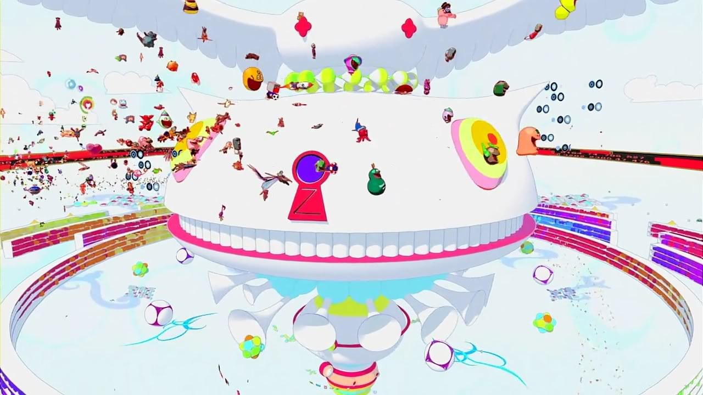

"Emotion vs. Strategy: Digital Media and the Experience of Space"

Marie-Laure Ryan is an independent scholars based in Colorado. She also has been Scholar in Residence at the University of Colorado, Boulder, and Johannes Gutenberg Fellow at the University of Mainz, Germany. Her books and articles on narratology, possible worlds theory, media theory, and digital culture has earned her the Prize for Independent Scholars and the Jeanne and Aldo Scaglione Prize for Comparative Literature, both from the Modern Language Association, and she has been the recipient of Guggenheim and NEA followships. She is the editor, with Jan-Noël Thon, of the forthcoming Storyworlds Across Media (University of Nebraska Press), and of the Johns Hopkins Guidebook to Digital Media with Lori Emerson and Benjamin Robertson, also forthcoming. Her Web site is at http://users.frii.com/mlryan/
Marie-Laure Ryan
Monday, April 22, 2013
"Emotion vs. Strategy:
Digital Media and the Experience of Space"
Spatiality is often considered by scholars to be one of the distinctive properties of New Media, while temporality has not been regarded as such, despite the considerable time we save by using computers. What are the reasons for this focus on space at the expense of time? In this presentation I will argue that the major contribution of new media with respect to space lies in promoting two types of experience: an emotional relation to space and place and a strategic apprehension. I will present new media projects that relate these experiences to both imaginary and real space. The more perceptible nature of space, compared to time, which makes its experience much more concrete, may be the reason for the spatial bias of current discourse on new media.